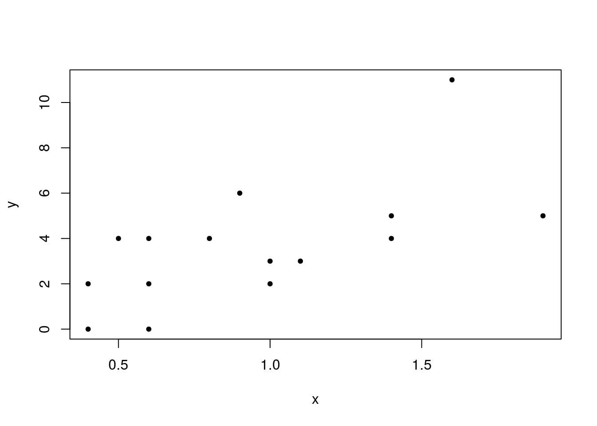
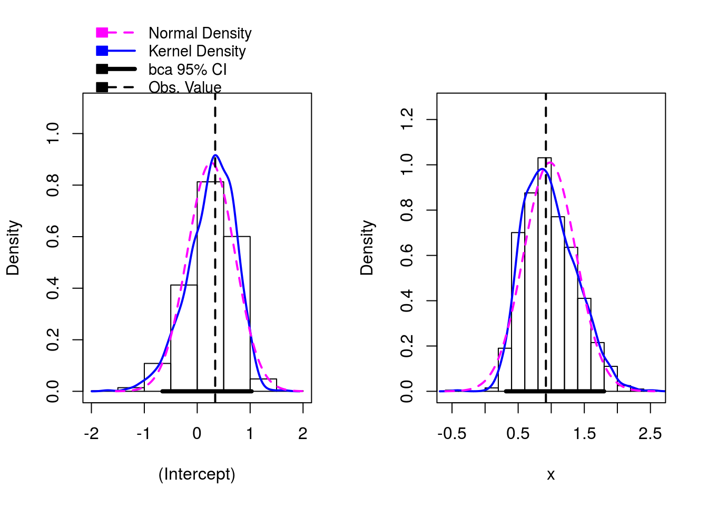

Vamos utilizar uma aplicação bastante simples de glm, com apenas n=15 observações, para ilustrar o uso de simulação (bootstrap não paramétrico) para estimar o viés e o erro padrão das estimativas, bem como obter intervalos de confiança para os parâmetros do modelo.
Vamos usar a função Boot do pacote car para realização das simulações. Antes de usar a função, vamos usar o R para fazer “na mão” um ou dois passos do algoritmo, para que você entenda o que é feito.
Entrada dos dados e ajuste de um MLG Poisson.
Variável explicativa.
Variável resposta, discreta com valores positivos. Vamos usar o modelo de Poisson.

##
## Call:
## glm(formula = y ~ x, family = "poisson", data = dados)
##
## Deviance Residuals:
## Min 1Q Median 3Q Max
## -2.2083 -0.6926 -0.2858 0.7530 1.7735
##
## Coefficients:
## Estimate Std. Error z value Pr(>|z|)
## (Intercept) 0.3396 0.3501 0.97 0.33207
## x 0.9196 0.2821 3.26 0.00111 **
## ---
## Signif. codes: 0 '***' 0.001 '**' 0.01 '*' 0.05 '.' 0.1 ' ' 1
##
## (Dispersion parameter for poisson family taken to be 1)
##
## Null deviance: 29.385 on 14 degrees of freedom
## Residual deviance: 19.083 on 13 degrees of freedom
## AIC: 64.841
##
## Number of Fisher Scoring iterations: 5Observe as estimativas, os erros padrões assintóticos e os testes para as hipóteses de nulidade dos parâmetros do modelo.
## Waiting for profiling to be done...## 2.5 % 97.5 %
## (Intercept) -0.3778400 0.9982974
## x 0.3626389 1.4721078## 2.5 % 97.5 %
## (Intercept) -0.3465971 1.025746
## x 0.3667752 1.472423Primeiros passos do bootstrap não paramétrico (à mão, para ilustração)
## [1] 14 14 10 3 3 15 8 5 11 4 10 3 7 14 12Armazenamos em indices os índices das observações que vão compor a primeira re-amostra. Observe que algumas observações vão aparecer mais de uma vez,outras não aparecerão na reamostra.
## x y
## 14 1.0 3
## 14.1 1.0 3
## 10 0.4 0
## 3 1.4 5
## 3.1 1.4 5
## 15 0.8 4
## 8 0.6 0
## 5 1.6 11
## 11 1.4 4
## 4 0.9 6
## 10.1 0.4 0
## 3.2 1.4 5
## 7 0.5 4
## 14.2 1.0 3
## 12 0.6 4dadosb1 é a base de dados correspondente à primeira reamostra. Vamos ajustar o modelo de Poisson para essa primeira reamostra.
## (Intercept) x
## 0.3395743 0.9195993Estimativas dos betas geradas pelo modelo ajustado com a amostra original…
## (Intercept) x
## -0.1168241 1.3654160Estimativas dos betas geradas pelo modelo ajustado
Com a primeira reamostra bootstrap. Você pode observar que as estimativas são diferentes daquelas obtidas no primeiro ajuste, o que já era de se esperar (a base é outra).
##
## Call:
## glm(formula = y ~ x, family = "poisson", data = dadosb1)
##
## Deviance Residuals:
## Min 1Q Median 3Q Max
## -2.0093 -0.6521 -0.2664 0.9033 1.4959
##
## Coefficients:
## Estimate Std. Error z value Pr(>|z|)
## (Intercept) -0.1168 0.4432 -0.264 0.792072
## x 1.3654 0.3641 3.750 0.000177 ***
## ---
## Signif. codes: 0 '***' 0.001 '**' 0.01 '*' 0.05 '.' 0.1 ' ' 1
##
## (Dispersion parameter for poisson family taken to be 1)
##
## Null deviance: 34.484 on 14 degrees of freedom
## Residual deviance: 19.211 on 13 degrees of freedom
## AIC: 63.6
##
## Number of Fisher Scoring iterations: 5Fazendo uma segunda vez:
## [1] 12 9 10 15 2 3 14 12 13 3 10 13 6 9 1## x y
## 12 0.6 4
## 9 0.4 2
## 10 0.4 0
## 15 0.8 4
## 2 1.1 3
## 3 1.4 5
## 14 1.0 3
## 12.1 0.6 4
## 13 1.9 5
## 3.1 1.4 5
## 10.1 0.4 0
## 13.1 1.9 5
## 6 0.6 2
## 9.1 0.4 2
## 1 1.0 2A base correspondente aos índices selecionados (nossa segunda reamostra).
ajusteb2 <- glm(y ~ x, family = 'poisson', data = dadosb2)
coef(ajusteb2) ### E as estimativas dos parâmetros geradas pela segunda reamostra.## (Intercept) x
## 0.3720940 0.7289805A ideia é repetir esses passos um grande número de vezes (gerando um grande número de estimativas) e estimar os parâmetros com base na distribuição das estimativas geradas pelas reamostras, conforme discutido em sala de aula. Fica como exercício para os alunos programar esse procedimento sem usar alguma função específica do R.
Vamos usar a função Boot, do pacote car, para a execução do bootstrap.
require(car)
require(boot)
help(Boot)
b1 <- Boot(ajuste, R = 999) ### Vamos utilizar 999 reamostragens.
head(boot.array(b1)) ## [,1] [,2] [,3] [,4] [,5] [,6] [,7] [,8] [,9] [,10] [,11] [,12] [,13]
## [1,] 1 1 1 0 2 1 0 0 3 1 1 0 1
## [2,] 0 0 2 1 2 2 0 0 3 1 2 0 0
## [3,] 1 1 0 1 1 2 0 2 0 2 1 2 2
## [4,] 1 1 0 2 2 0 0 2 1 0 2 2 0
## [5,] 1 1 2 1 0 1 1 1 2 0 1 1 1
## [6,] 3 1 0 1 0 0 1 0 2 3 1 1 1
## [,14] [,15]
## [1,] 2 1
## [2,] 2 0
## [3,] 0 0
## [4,] 2 0
## [5,] 2 0
## [6,] 1 0Com a função boot.array podemos verificar a composição (os índices)
em cada reamostra. Observar que cada linha se refere a uma reamostra.

##
## Number of bootstrap replications R = 999
## original bootBias bootSE bootMed
## (Intercept) 0.33957 -0.078691 0.44947 0.31055
## x 0.91960 0.060629 0.39496 0.93700Estimativas geradas pelo modelo inicial (com a base original); Estimativas bootstrap para o vício; Estimativas bootstrap para o erro padrão; Mediana das estimativas bootstrap. Comparar as duas últimas colunas com os resultados correspondentes no summary do modelo original.
## Estimate Std. Error
## (Intercept) 0.3396 0.3501
## x 0.9196 0.2821## Bootstrap bca confidence intervals
##
## 2.5 % 97.5 %
## (Intercept) -0.6575624 1.028130
## x 0.3161908 1.799637## Bootstrap percent confidence intervals
##
## 2.5 % 97.5 %
## (Intercept) -0.7607477 1.006801
## x 0.3401830 1.845118## 2.5 % 97.5 %
## (Intercept) -0.3465971 1.025746
## x 0.3667752 1.472423Intervalos de confiança usando bootstrap (de duas formas diferentes)
e os intervalos assintóticos. Repare que os intervalos assintóticos são, indevidamente, mais precisos.
Agora, usando Bootstrap para estimar a resposta esperada para x = 1,5. exp(beta0 + beta1 * 1,5).
## (Intercept) x
## 0.3395743 0.9195993f <- function(obj) exp(coef(obj)[1] + coef(obj)[2] * 1.5)
bpred <- Boot(ajuste,f , R=999)
confint(bpred, type = 'perc')## Bootstrap percent confidence intervals
##
## 2.5 % 97.5 %
## (Intercept) 3.921622 8.764966p1 <- predict(ajuste, newdata = data.frame(x = 1.5), type = 'link', se.fit = T)
intLink <- c(p1$fit - 1.96 * p1$se.fit, p1$fit + 1.96 * p1$se.fit)
intResp <- exp(intLink)
intResp## 1 1
## 4.014595 7.752459Exercício - Usar bootstrap para produzir inferências para o problema dos sinistros (estimar os erros padrões, calcular ICs). Comparar com os correspondentes resultados assintóticos.